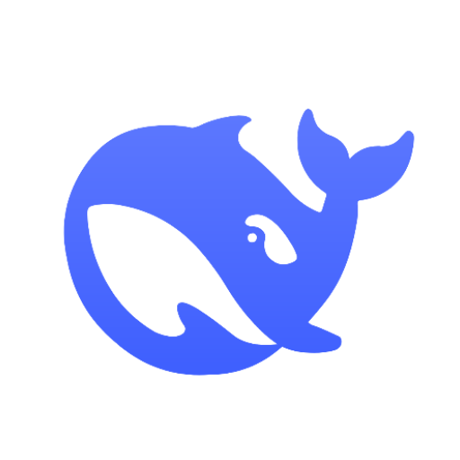

DeepSeek este o platformă și o familie de modele AI dezvoltate de compania DeepSeek din China. Este cunoscută pentru modele puternice la raționament, matematică și programare, și pentru accentul pus pe publicarea de modele și rapoarte tehnice.
Compania DeepSeek a apărut în 2023. A lansat mai multe modele, iar în 2025 a atras atenția prin modele de tip reasoning, precum DeepSeek R1, și prin publicarea lor în regim open source în unele variante.
Se evidențiază prin rezultate bune la sarcini de logică și cod și prin faptul că pune la dispoziție modele și resurse care pot fi studiate și folosite de comunitate. De multe ori este menționată și pentru costuri mai mici raportate la performanță.
Este folosit pentru programare, rezolvarea de probleme de logică, explicații tehnice, generare de text și testarea comparațiilor între modele. Este folosit și prin API în proiecte care au nevoie de un model eficient.
Poate greși la fel ca orice model de limbaj. Dacă folosești rezultate la teme sau la proiecte, verifică soluțiile și explică pașii, nu doar răspunsul final. Atenție și la drepturi de autor când generezi cod sau texte pentru publicare.